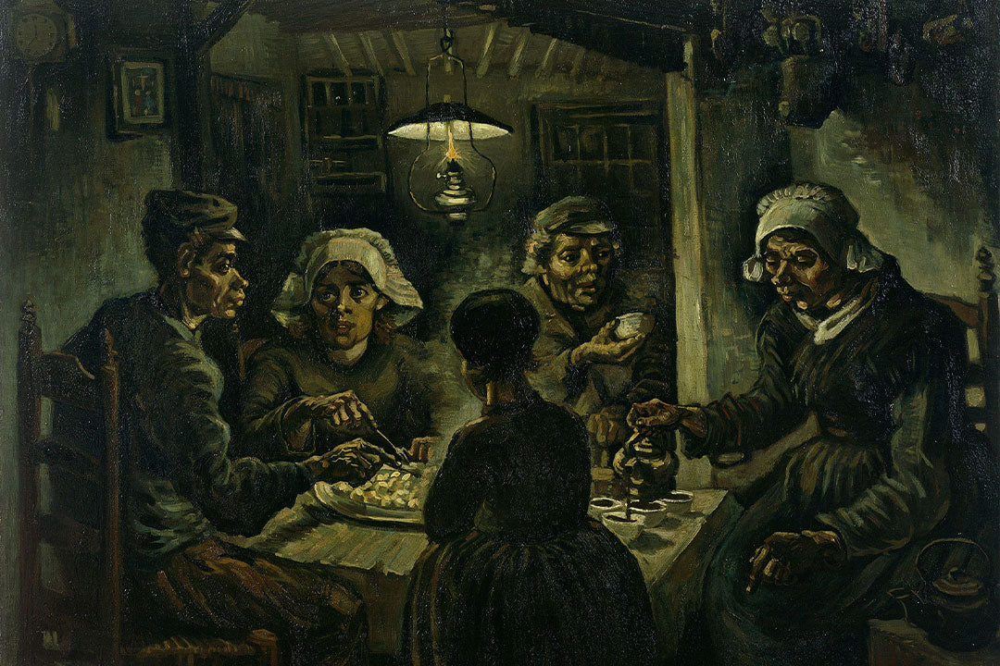
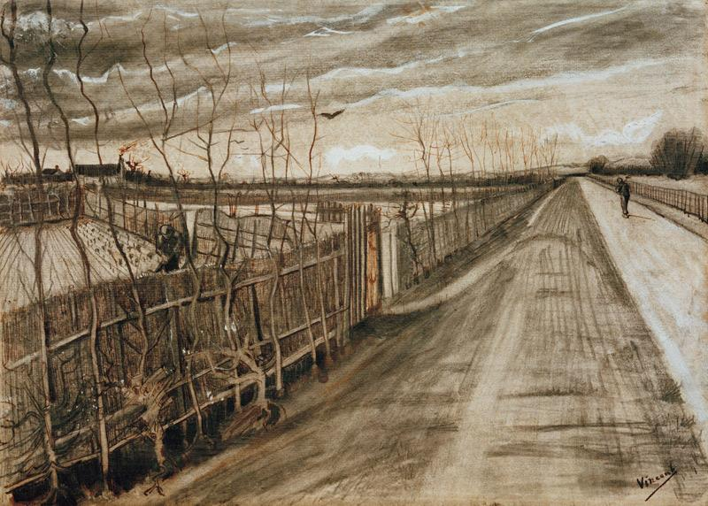
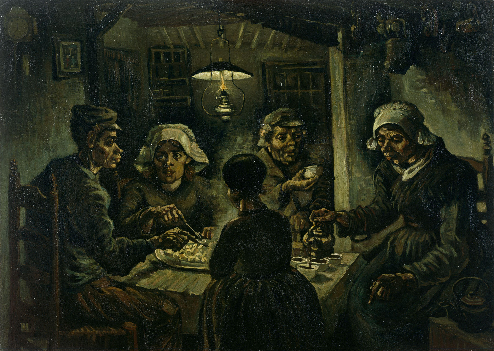
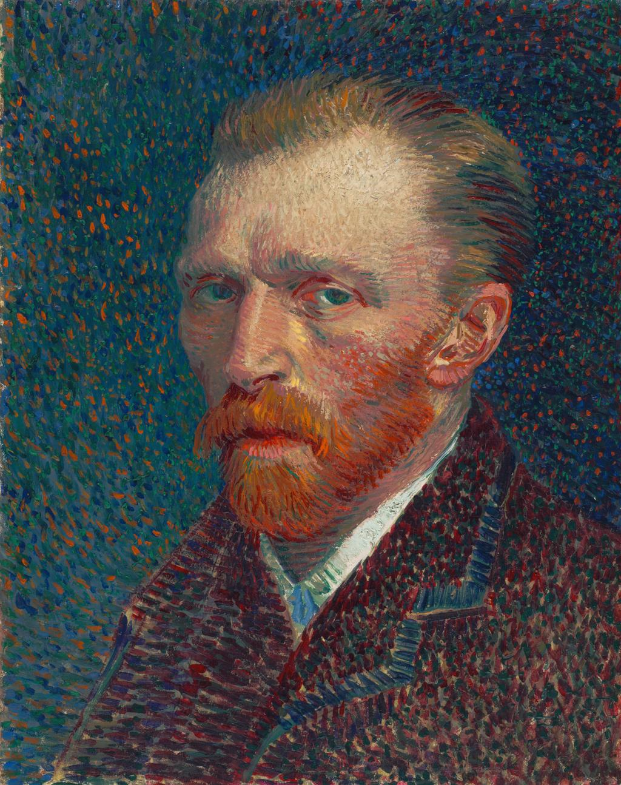
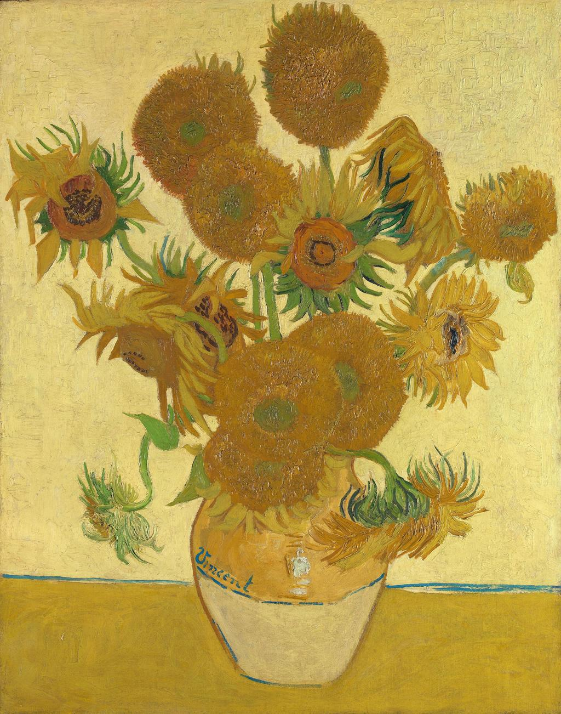
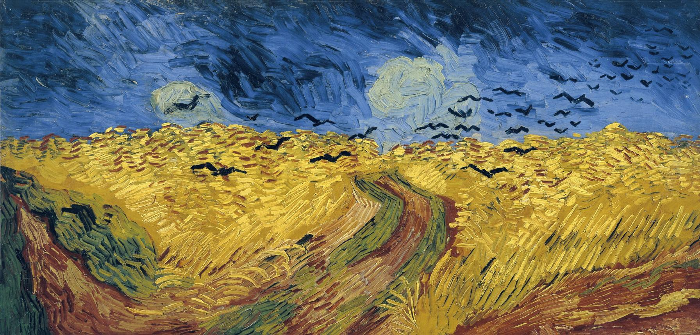
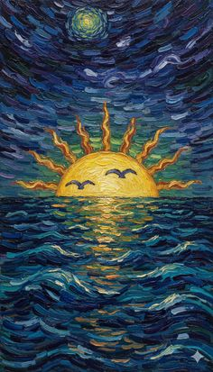
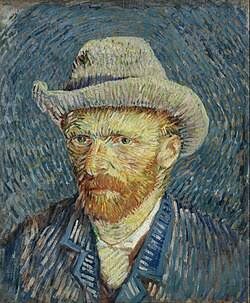

Paintings Van Gogh
Vincent van Gogh was one of the most influential artists in the history of art and a leading figure of Post-Impressionism. Born in the Netherlands in 1853, he developed a distinctive artistic style characterized by vivid colors, expressive brushstrokes, and a deeply personal way of interpreting the world around him.
Explore more below

The Beginning (1853–1880)
1853 — 1880
The Beginning
Vincent van Gogh was born in the Netherlands in 1853. Before becoming a painter, he explored different professions and considered a religious career. At the age of 27, he decided to dedicate himself to art.

Learning to See (1881–1885)
1881 — 1885
Learning to See
Van Gogh developed his drawing and painting skills in the Netherlands. He became interested in the lives of rural workers and ordinary people. His early works often featured dark colors and realistic scenes, as seen in The Potato Eaters.

A World of Color (1886–1887)
1886 — 1887
A World of Color
In Paris, Van Gogh encountered Impressionism, Japanese prints, and other artists. These experiences encouraged him to experiment with brighter colors, stronger contrasts, and more expressive brushstrokes.

The Southern Light (1888–1889)
1888 — 1889
The Southern Light
Van Gogh moved to Arles in southern France. Inspired by the landscape and sunlight, he created many of his best-known works, including the Sunflowers series. His style became increasingly vivid and expressive.

A Lasting Legacy (1889–1890)
1889 — 1890
A Lasting Legacy
During his final years, Van Gogh continued creating paintings while facing serious health difficulties. He painted The Starry Night in 1889 and died in Auvers-sur-Oise in July 1890, aged 37. His work later became a major influence on modern art.

The collection
Explore the painting

.jpg)
.jpg)
.jpg.jpg)
.jpg)
.jpg)
.jpg)
.jpg)
.jpg)
.jpg)
.jpg)
